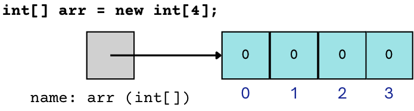

Value vs. Reference Semantics#
Note
Above, you’ll see there’s a video titled CSE 121: Value vs. Reference Semantics Video Walkthrough. The video and the reading both have the same information! You’re not required to go through both the video and the reading, as the video just walks through the reading to help contextualize it!
Remember this diagram from when we first talked about arrays?

We drew it this way on purpose, making sure to include that arrow pointing to the int array. This is important because it turns out array variables work a little bit differently than variables that hold primitive values (as a reminder, these are types that are built into Java like int, double, boolean, and char).
📦 Value Semantics#
It turns out that that that variables holding primitive values obey what we call value semantics. Recall that we’ve talked about thinking of variables as boxes. When we’re dealing with variables using value semantics, the actual values are stored in these boxes. This means that when we use primitive variables to assign to other variables, when we pass them as parameters, and when we return them from methods, we’re really making copies of these values and using them.
Walk through the code in your mind and predict the output you expect to see before you run it!
public class ValueSemantics {
public static void main(String[] args) {
int a = 3;
int b = a;
System.out.println("a: " + a);
System.out.println("b: " + b);
a = 99;
System.out.println("after assignment to a:");
System.out.println("a: " + a);
System.out.println("b: " + b);
}
}
Go ahead and run the code above! Is the output what you expected to see? Let’s talk about it step by step:
int a = 3;- This line creates a newintvariable namedaand stores the value3in it.int b = a;- Here, we look at the value ina, make a copy of it, and store it in a newintvariable namedb.a = 99;- Next, we replace the value that was in the variableawith the value99.
When you first learned about variables, you may have expected to see b’s value change as well when we assigned 99 to a because of the line int b = a;. However, you learned that that line didn’t tie a and b together – all it did was take a’s value, make a copy of it, and put that copy into b. So changing the value in a later on has absolutely no effect on b because b is dealing with a totally separate copy of the value!
You can see a visual representation of these steps by clicking “Expand” below (note that the slides below are purely a visual representation of the steps described above).
➡️ Reference Semantics#
Now let’s talk about reference semantics. These semantics apply whenever we are dealing with a variable that has an object type. Let’s start by thinking about some of the objects we’ve seen so far this quarter: Turtle, Scanner, File, PrintStream, and arrays! Each of these objects is rather big and complicated - much more so than any of the primitive types. Because of this, an object variable doesn’t actually store the object itself, but instead stores what we call a reference to the object. You can think of a reference as a “way to find” the object that exists somewhere else on your computer, like a set of directions to get to its address. Let’s look at a program similar to the one above that instead deals with array variables and thus, reference semantics.
Walk through the code in your mind and predict the output you expect to see before you run it!
import java.util.*;
public class ReferenceSemantics {
public static void main(String[] args) {
int[] list1 = {4, 8, 15, 16, 23};
int[] list2 = list1;
System.out.println("list1: " + Arrays.toString(list1));
System.out.println("list2: " + Arrays.toString(list2));
list1[1] = 99;
System.out.println("after assignment to list[1]:");
System.out.println("list1: " + Arrays.toString(list1));
System.out.println("list2: " + Arrays.toString(list2));
}
}
Go ahead and run the code example above. What is different between the output of this code snippet and the previous one? Let’s break down what’s happening here…
int[] list1 = {4, 8, 15, 16, 23};- This line creates a new array somewhere on your computer, then creates anint[]variable namedlist1that contains a reference (indicated by the arrow) to the array.int[] list2 = list1;- Here, we look at the reference inlist1, make a copy of it, and store it a newint[]variable namedlist2. This means thatlist2also contains a reference to the exact same array!list[1] = 99;- Next, we follow the reference inlist1(which remember, is the same reference that is inlist2) to assign99to the compartment at index 1 in the array.
You can see a visual representation of these steps by clicking “Expand” below (note that the slides below are purely a visual representation of the steps described above).
When we print out the contents of list1 and list2 afterwards, the array that is printed out is exactly the same because both list1 and list2 contain references to the same array! This means that, even if we modified the array by following list1’s reference, printing the array using list2’s reference will still reflect that change because they both just contain directions to the exact same location!
Tip
Notice that the steps for assigning a variable to another variable (as in b = a; and list2 = list1;) are really the same!
We look at the variable on the right
Make a copy of its contents (regardless of whether it contains a value or a reference)
Put that copy into the variable on the left
🤯 Using Parameters and Returns#
Now, how do value and reference semantics affect parameters and returns? Let’s start by reviewing how they work with value semantics.
📘 Value Semantics with Parameters and Returns#
Take a moment to read through the code below where the method flipValue() accepts a boolean parameter (remember that boolean is a primitive type, so this parameter uses value semantics).
public class ValueSemanticsInfoFlow {
public static void main(String[] args) {
boolean test = true;
flipValue(test);
System.out.println("value of test after call: " + test);
}
public static void flipValue(boolean b) {
/*
if (b == true) {
b = false;
} else {
b = true;
}
*/
// this is equivalent to the code above, but is a lot cleaner!
// Remember that the ! operator negates the boolean value
// (so F becomes T, and T becomes F)
b = !b;
}
}
Take a moment to think about what you expect the output to be before running it. You’ll notice that the test variable’s value in main doesn’t change when the parameter b in the flipValue() method is negated. This is because, due to value semantics, the parameter that flipValue() accepts is a copy of the test’s value, and when that copy is negated, it doesn’t have any effect on the test variable in main’s scope.
Let’s break down what’s happening here step-by-step:
boolean test = true;- This line creates abooleanvariable inmain’s scope that holds the valuetrue. Remember,booleans are primitive types, and so they obey value semantics!flipValue(test);- Here we begin to execute theflipValue()method call, passing in a copy of the value held in thetestvariable (which istrue) toflipValue()’s parameterb.b != b;- Here, we look at the value inb(which istrue), negate it with the!operator (making itfalse), and then store it back into the parameterbinflipValue()’s scope.System.out.println(... + test);- Here we return tomain’s scope, and print out some text along with the value stored intest. This value hasn’t been changed since its initialization, so we print out the valuetrue.
Recall that we made a copy of the value in
testbefore passing it intoflipValue()’s parameter, so when we modifiedbinflipValue’s scope,testremained unchanged.
You can see a visual representation of these steps by clicking “Expand” below (note that the slides below are purely a visual representation of the steps described above).
Tip
You may have run into this issue when you first started working with returns! When dealing with value semantics, if we wanted test to hold the updated value from flipValue(), we’d need to return the value in the flipValue() method body and catch the return by storing it in test in main with test = flipValue(test);!
📗 Reference Semantics with Parameters and Returns#
Read through the following code which is similar to the code above, but instead deals with arrays (which obey the rules of reference semantics).
import java.util.*;
public class ReferenceSemanticsInfoFlow {
public static void main(String[] args) {
boolean[] tests = {true, true, false, true, false, false};
flipValues(tests);
System.out.println("value of test after call: " + Arrays.toString(tests));
}
public static void flipValues(boolean[] b) {
for (int i = 0; i < b.length; i++) {
b[i] = !b[i];
}
}
}
Take a moment to think about what you expect the output to be before running it. This time, you will see that the values in tests are affected by the call to flipValues() even though there is no return, due to the beauty of reference semantics! tests holds a reference to the array, so it passes a copy of that reference (which points to the same array) to flipValues()’s parameter b. Then, inside of flipValues(), b is used to update the values in that array and when we return to main, tests will see those updated values! Notice how the separate tests and b boxes both have arrows pointing to the same array in your computer!
Let’s break down what’s happening here step-by-step:
boolean[] tests = {true, true, false, true, false, false};- This line creates an array ofbooleanvalues stored somewhere on your computer, and stores a reference to the array in the variabletests.flipValues(tests);- Here we call the methodflipValues()and pass in a copy of the reference stored intests, which refers to the same array ofbooleanvalues stored on your computer.for (...) { b[i] = !b[i]; }- Next, inside of theflipValues()method, we traverse the array whose reference is passed in as a parameter and negate each of its elements (turningtrueelements tofalse, andfalseelements totrue). Remember, our program has only created one array and otherwise has just made copies of references to it!System.out.println(... + Arrays.toString(tests));- This line prints out some text along with the String representation of the array referenced bytests(using theArrays.toStringmethod call). Note that this array reflects the changes made in theflipValues()method, even though it did not return anything!
You can see a visual representation of these steps by clicking “Expand” below (note that the slides below are purely a visual representation of the steps described above).
Tip
Click to 13:26 in the walkthrough video to see an explanation of each step of the flipValue() and flipValues() methods!